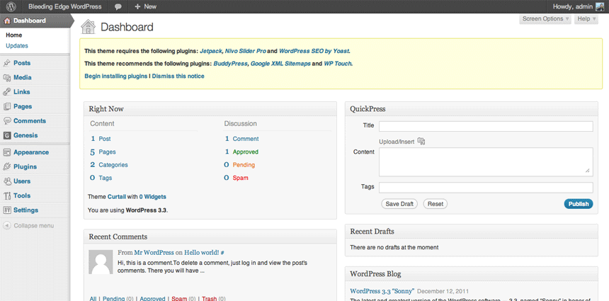
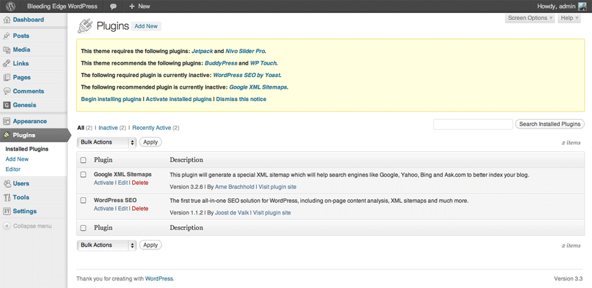

TGM Plugin Activation
The best way to require and recommend plugins for WordPress themes (and other plugins)


TGM Plugin Activation is a PHP library that allows you to easily require or recommend plugins for your WordPress themes (and plugins). It allows your users to install and even automatically activate plugins in singular or bulk fashion using native WordPress classes, functions and interfaces. You can reference pre-packaged plugins, plugins from the WordPress Plugin Repository or even plugins hosted elsewhere on the internet.
Download
Download the latest stable version release zipball or tarball. You can also download your own package (such as the development version) on GitHub.
Dependenices
The TGM Plugin Activation library requires at least WordPress 3.0 and PHP 5 to work properly.
Installation
Installing the TGM Plugin Activation library is easy. Follow the instructions below:
- Drop the class file somewhere in your theme hierarchy.
- Add a
require_oncecall within functions.php (or other theme file) referencing the class file. - Create a function, hooked to
tgmpa_register, that registers the plugin and configurations.
For steps 2 and 3, it is recommended your view, copy and paste the contents of example.php
and amend to suit. The example.php file is a model for how you should include the class in your theme.
Some important things to note:
- With the
require_oncecall, make sure to amend the path to the correct location within your theme. - For plugins pulled from the .org repo, the source argument is optional. Otherwise it is required and should point to the absolute path for the plugin zips within your theme, or to a URL for zips elsewhere online.
- The
$configvariable holds an array of arguments that can be used to customize aspects of the class. If you define an absolute default path for packaged plugins, you do not need to specify the directory path for your pre-packaged plugin within the 'source' argument. You will only need to specify the zip file name.
Features
The TGM Plugin Activation library revolutionizes how plugins can be handled with WordPress themes and other plugins. By using classes that are utilized within WordPress, the TGM Plugin Activation library can automatically install and activate multiple plugins that are either packaged with a theme, downloaded from the WordPress Plugin Repository or downloaded elsewhere on the internet (perhaps a private repository). The library uses the WP_Filesystem Abstraction class to find the best way to install the plugins - WP_Filesystem searches through a number of methods (Direct, FTP, FTP Sockets, SSH) and determines the best one to use based on the user's server setup. If any FTP credentials are needed, a form will be displayed to prompt users to input their FTP credentials in order to continue processing the request. The library uses WordPress' own Plugin_Upgrader and Plugin_Installer_Skin and extensions of other WordPress upgrader classes to handle singular and bulk installations.
API
The TGM Plugin Activation library has an easy to use API to reference plugins and set config options. Consider the code below (taken from example.php):
/**
* Include the TGM_Plugin_Activation class.
*/
require_once dirname( __FILE__ ) . '/class-tgm-plugin-activation.php';
add_action( 'tgmpa_register', 'my_theme_register_required_plugins' );
/**
* Register the required plugins for this theme.
*
* In this example, we register two plugins - one included with the TGMPA library
* and one from the .org repo.
*
* The variable passed to tgmpa_register_plugins() should be an array of plugin
* arrays.
*
* This function is hooked into tgmpa_init, which is fired within the
* TGM_Plugin_Activation class constructor.
*/
function my_theme_register_required_plugins() {
/**
* Array of plugin arrays. Required keys are name and slug.
* If the source is NOT from the .org repo, then source is also required.
*/
$plugins = array(
// This is an example of how to include a plugin pre-packaged with a theme.
array(
'name' => 'TGM Example Plugin', // The plugin name.
'slug' => 'tgm-example-plugin', // The plugin slug (typically the folder name).
'source' => get_stylesheet_directory() . '/lib/plugins/tgm-example-plugin.zip', // The plugin source.
'required' => true, // If false, the plugin is only 'recommended' instead of required.
'version' => '', // E.g. 1.0.0. If set, the active plugin must be this version or higher.
'force_activation' => false, // If true, plugin is activated upon theme activation and cannot be deactivated until theme switch.
'force_deactivation' => false, // If true, plugin is deactivated upon theme switch, useful for theme-specific plugins.
'external_url' => '', // If set, overrides default API URL and points to an external URL.
),
// This is an example of how to include a plugin from a private repo in your theme.
array(
'name' => 'TGM New Media Plugin', // The plugin name.
'slug' => 'tgm-new-media-plugin', // The plugin slug (typically the folder name).
'source' => 'https://s3.amazonaws.com/tgm/tgm-new-media-plugin.zip', // The plugin source.
'required' => true, // If false, the plugin is only 'recommended' instead of required.
'external_url' => 'https://github.com/thomasgriffin/New-Media-Image-Uploader', // If set, overrides default API URL and points to an external URL.
),
// This is an example of how to include a plugin from the WordPress Plugin Repository.
array(
'name' => 'BuddyPress',
'slug' => 'buddypress',
'required' => false,
),
);
/**
* Array of configuration settings. Amend each line as needed.
* If you want the default strings to be available under your own theme domain,
* leave the strings uncommented.
* Some of the strings are added into a sprintf, so see the comments at the
* end of each line for what each argument will be.
*/
$config = array(
'default_path' => '', // Default absolute path to pre-packaged plugins.
'menu' => 'tgmpa-install-plugins', // Menu slug.
'has_notices' => true, // Show admin notices or not.
'dismissable' => true, // If false, a user cannot dismiss the nag message.
'dismiss_msg' => '', // If 'dismissable' is false, this message will be output at top of nag.
'is_automatic' => false, // Automatically activate plugins after installation or not.
'message' => '', // Message to output right before the plugins table.
'strings' => array(
'page_title' => __( 'Install Required Plugins', 'tgmpa' ),
'menu_title' => __( 'Install Plugins', 'tgmpa' ),
'installing' => __( 'Installing Plugin: %s', 'tgmpa' ), // %s = plugin name.
'oops' => __( 'Something went wrong with the plugin API.', 'tgmpa' ),
'notice_can_install_required' => _n_noop( 'This theme requires the following plugin: %1$s.', 'This theme requires the following plugins: %1$s.' ), // %1$s = plugin name(s).
'notice_can_install_recommended' => _n_noop( 'This theme recommends the following plugin: %1$s.', 'This theme recommends the following plugins: %1$s.' ), // %1$s = plugin name(s).
'notice_cannot_install' => _n_noop( 'Sorry, but you do not have the correct permissions to install the %s plugin. Contact the administrator of this site for help on getting the plugin installed.', 'Sorry, but you do not have the correct permissions to install the %s plugins. Contact the administrator of this site for help on getting the plugins installed.' ), // %1$s = plugin name(s).
'notice_can_activate_required' => _n_noop( 'The following required plugin is currently inactive: %1$s.', 'The following required plugins are currently inactive: %1$s.' ), // %1$s = plugin name(s).
'notice_can_activate_recommended' => _n_noop( 'The following recommended plugin is currently inactive: %1$s.', 'The following recommended plugins are currently inactive: %1$s.' ), // %1$s = plugin name(s).
'notice_cannot_activate' => _n_noop( 'Sorry, but you do not have the correct permissions to activate the %s plugin. Contact the administrator of this site for help on getting the plugin activated.', 'Sorry, but you do not have the correct permissions to activate the %s plugins. Contact the administrator of this site for help on getting the plugins activated.' ), // %1$s = plugin name(s).
'notice_ask_to_update' => _n_noop( 'The following plugin needs to be updated to its latest version to ensure maximum compatibility with this theme: %1$s.', 'The following plugins need to be updated to their latest version to ensure maximum compatibility with this theme: %1$s.' ), // %1$s = plugin name(s).
'notice_cannot_update' => _n_noop( 'Sorry, but you do not have the correct permissions to update the %s plugin. Contact the administrator of this site for help on getting the plugin updated.', 'Sorry, but you do not have the correct permissions to update the %s plugins. Contact the administrator of this site for help on getting the plugins updated.' ), // %1$s = plugin name(s).
'install_link' => _n_noop( 'Begin installing plugin', 'Begin installing plugins' ),
'activate_link' => _n_noop( 'Begin activating plugin', 'Begin activating plugins' ),
'return' => __( 'Return to Required Plugins Installer', 'tgmpa' ),
'plugin_activated' => __( 'Plugin activated successfully.', 'tgmpa' ),
'complete' => __( 'All plugins installed and activated successfully. %s', 'tgmpa' ), // %s = dashboard link.
'nag_type' => 'updated' // Determines admin notice type - can only be 'updated', 'update-nag' or 'error'.
)
);
tgmpa( $plugins, $config );
}
Each plugin can take an array of parameters, as indicated below (parameters in red are required):
- name - The name of the plugin.
- slug - The plugin slug, which is typically the name of the folder that holds the plugin.
- required - Either true or false. If set to true, the plugin is "required". If set to false, the plugin is "recommended".
- source - The source of the plugin. This parameter is required if the plugin you are referencing is not from the WordPress Plugin Repository. You can reference either pre-packaged plugins or plugins elsewhere on the internet from this parameter.
- version - The minimum version required for the plugin. This parameter is useful if you require a minimum version of a plugin in order for your theme to work. If the user has the plugin installed but does not meet the minimum version specified, they are given a notice asking them to update the plugin to the latest version.
- force_activation - Either true or false. If set to true, it forces the specified plugin to be active at all times while the current theme is active. The plugin can only be deactivated by switching themes.
- force_deactivation - Either true or false. If set to true, it forces the specified plugin to be deactivated when the current theme is switched. This is useful for deactivating theme-specific plugins.
- external_url - An external URL for the plugin. By default, plugins referenced from the WordPress Plugin Repository are linked to their plugin information via thickbox. This parameter overrides this default behavior and allows you to specify any URL for the plugin.
The library also has a set of configuration options for you to manipulate on a global scale, as indicated below:
- default_path - The default absolute path for pre-packaged plugins.
- menu - The menu slug for the plugin install page. The slug for the actual plugin install page, by default it looks like this:
?page=tgmpa-install-plugins - has_notices - Either true or false. If true, admin notices are shown for required/recommended plugins.
- dismissable - Either true or false. If true, admin admin notices can be dismissed by the user.
- dismiss_msg - If the
dismissableoption is set to false, then this message will be output above the admin notice before listing the required/recommended plugins. This is filtered bywp_kses_post(). - is_automatic - Either true or false. If true, plugins will automatically be activated upon successful installation (for both singular and bulk installation processes).
- message - Optional HTML content to include before the plugins table is output. This is filtered by
wp_kses_post(). - strings - An array of customizable strings used throughout the library. Strings prefixed with
_n_noop()have both singular and plural forms (in that order).
Screenshots
Below are a few screenshots to give you an idea of how the TGM Plugin Activation library interacts with WordPress.




License
The TGM Plugin Activation library is licensed under the GPL-2.0 or later license.
Authors
The TGM Plugin Activation library was created and is maintained by Thomas Griffin.